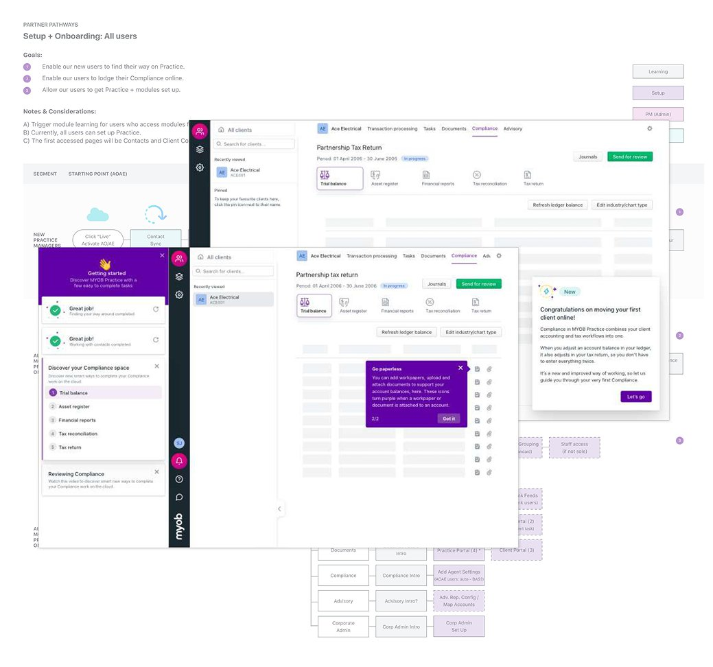
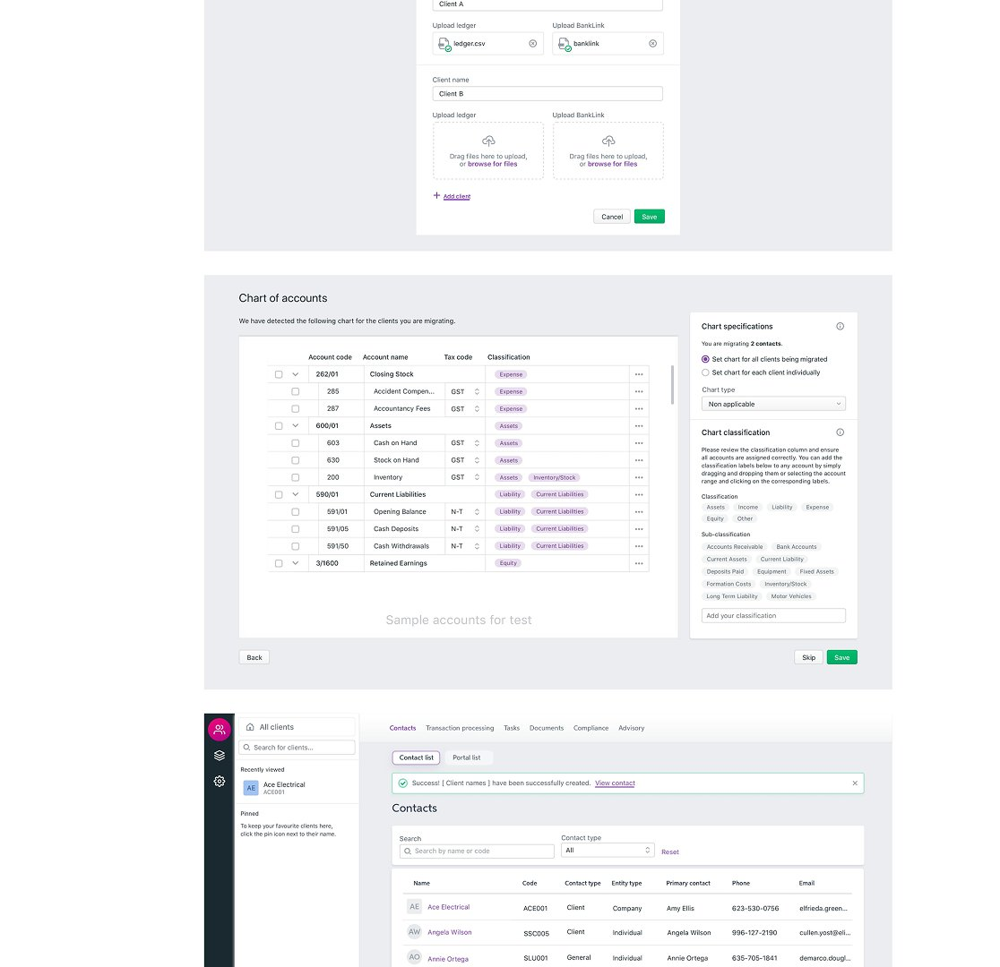

MYOB · 2020–2021
Two projects that shaped how I think about scalable, systematic design. The first: a cohesive onboarding framework for accountants migrating their tax clients to a new cloud platform. The second: a research sprint and prototype series for custom charts of accounts, grounded in real user needs before a single production line was written.
My role
Sole designer
Company
MYOB
Timeline
2020–2021
MYOB Practice was at early release stage when I joined, with compliance features live and a full rollout planned within a year. The platform contained distinct modules, some gated by subscription tier, operating largely in silos. Tens of thousands of Australian accountants were about to migrate their tax clients from legacy desktop software to the cloud, many for the very first time.
Onboarding was inexistent. There was no connecting tissue between modules, no guidance for new practice managers, and no way to differentiate what users needed based on their role or entry point. My job was to change that, systematically.
The brief was to create a scalable onboarding experience, starting with the most urgent cohort: Australian MYOB software users migrating their tax clients for End of Financial Year 2021. The solution needed to work for this group immediately and extend to all new users over time.
Through discovery research and stakeholder workshops, I identified three core user goals that onboarding needed to serve across all roles: find your way around the platform, lodge compliance online, and get your modules set up. These became the structural pillars of the framework.

Accountants using MYOB Practice can optionally use charts of accounts specific to their clients. MYOB needed a way to accommodate all types, including custom charts built outside the standard system. Before committing to any solution, the brief was to research appetite and run a design sprint to validate direction.
From the initial sprint, two decisions were made: send a survey to understand how many practices had created custom charts and how they used them, then design and test three prototypes with users recruited from survey respondents who expressed interest.

"The best systematic design isn't about building everything at once. It's about building the right connective tissue so the product can grow without fracturing."
MYOB was formative. Working on a platform mid-launch, with real users migrating real client data under EOFY deadline pressure, taught me how to design for high-stakes contexts where mistakes have financial consequences. It also taught me the discipline of building frameworks first, features second.
The onboarding framework had to work for accountants who had never used cloud software before and for experienced operators who just needed to find things fast. Designing that range into a single coherent system, without either group feeling patronised or lost, is a challenge I still draw on.